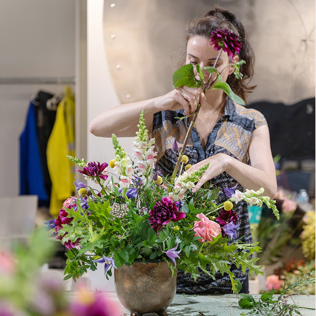
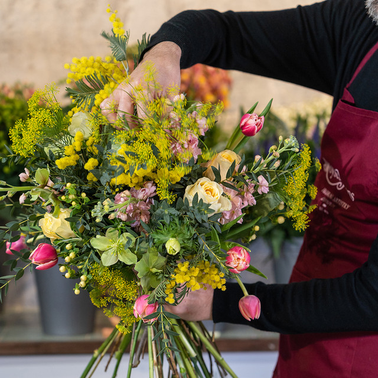
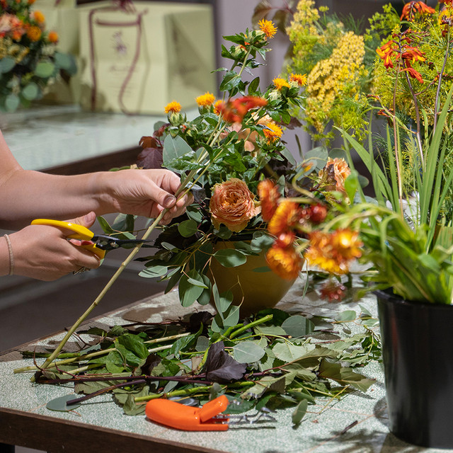
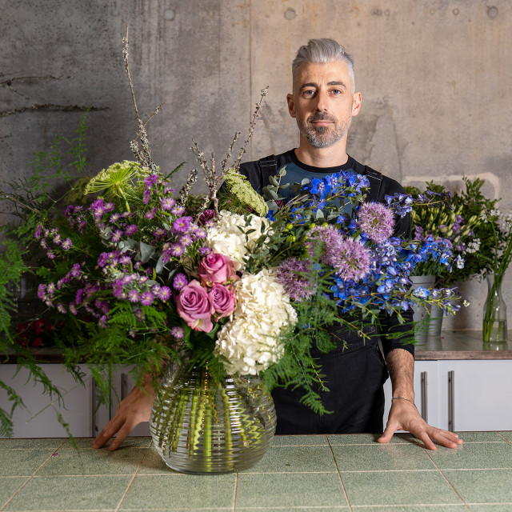

With a variety of different courses to choose from, whether you are just a flower enthusiast or wanting to pursue a career in floristry, you get to decide whether you want to create one of our famous hand-tied bouquets, learn to arrange some exquisite seasonal flowers in a vase or even create your very own bridal bouquet, the choice is all yours.
£95.00
Description: Elevate your flower arranging skills and learn the trick of the trade with our Vase Workshop. Discover simple techniques to get the best out of your flowers and learn how to build beautiful vase designs using tried and tested methods.
Description: Indulge in the one of our favourite seasons and delight in gorgeous selection of spring gems with this bouquet making class. You will learn the basics of flower care, conditioning and valuable tips on how to maximise the life of your flowers
£230.00
Description: Whether you enjoy entertaining at home or filling your abode with an abundance of flowers, we will demonstrate how to make the most of your flowers and create low-cost, impactful designs..
£1,495.00
Description: Be prepared to be completely immersed in a world of flowers and to learn multiple different aspects of professional floristry with this one week course.Learn the essentials of floristry at Bloom Waves